The layout
Works in ClassicWorks in Forever
Glance replaces the player and target frames with two groups of bars: yours on the left and the target's on the right, mirrored so they meet in the middle of the screen. Between them runs the spine, a dark track where threat climbs as a flame.
Under each group is a stack: your cast, then your buffs and debuffs and warnings on the left; the target's cast, your debuffs on it, its quest progress and raid marks on the right. Each part keeps its place through a fight, so nothing jumps when a cast starts or a debuff falls off.
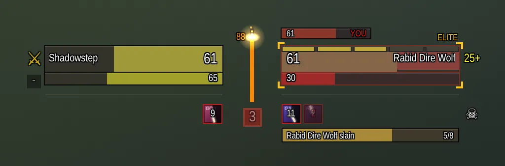
With nothing targeted and no fight on, your bars sit centered on the screen. A target, combat, or a mob coming for you slides the groups apart to where you placed them. The game won't move these frames during combat, so they snap apart as combat starts and only come back together when it ends.
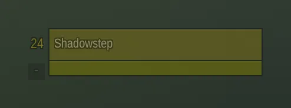
Your bars
Level and combat
Your level sits beside the outer end of your bars. In combat, red crossed swords take its place: they shrink in and flash as the fight starts, and shatter when it ends.
Health
In your class color. Your name turns green while you're flagged for PvP. Each hit leaves a red chunk where your health was, which shrinks and fades away, so you can see how hard you were just hit. The bar flashes red below 30%.
Power and mana
Energy, rage or mana. A spark marks the next energy tick, or for mana the five-second rule
and then each regen tick. While you cast, a pale strip at the end of the fill is the mana that cast will spend.
Frostbolt x12 at the bar's left end means your mana covers 12 more of your last spell. Druids see their
mana on its own bar while shapeshifted.
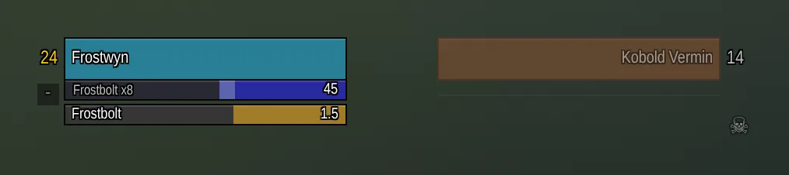
Ammo, soul shards and the swing timer
Hunters and warriors with a ranged weapon see their ammo against what the quiver or pouch holds; warlocks see soul shards against their soul bags. The swing timer counts to your next melee swing (white) or ranged shot (green).
Your cast
In its own lane under your bars: the spell and the seconds left. The lane stays put through a fight, so nothing below it moves when you cast.
Your pet
Above the inner end of your bars: its health, with its debuffs above. Hits on it flash red like on yours. Hunters also see its mood here.
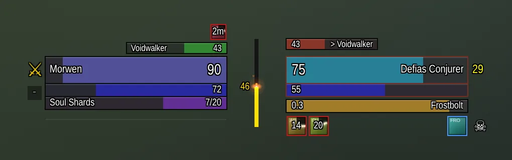
The target's bars
Level and classification
The level beside the outer end is colored by difficulty: + means elite and ?? means far
above you. Above it sits a tag: ELITE, RARE, BOSS, the enemy faction, or your
own faction in green for a player on your side, plus PVP when it's flagged. Corner brackets around the
bars take the tag's color.
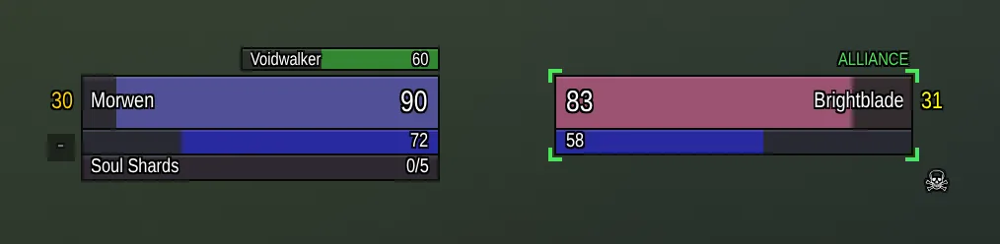
Health
In class color, or gray when someone else tagged it. The panel's edge shows friend or foe. The name is green for a friend flagged for PvP and red for a flagged foe. Hits leave the same shrinking red chunk as on yours.
Combo points
Yours on this target, one gold segment per point along the top of its health.
Target of target and kill pace
Above the inner end: who your target is attacking. When it's you it says YOU in red, blinking for a few
seconds as it turns to you. Above the outer end, kill pace shows how long this fight has
run against your usual time for this kind of mob (~12s before the fight starts).
Known damage
Green and pale strips on the target's health are damage already on its way: what your DoTs will still deal, and
the spell you're casting. When that's enough, it says DOTS KILL or KILL; otherwise
x3 means three more of your usual attack.
Execute zone
For warriors and paladins, a gold tick marks 20% on the target's health, and orange corner brackets pulse once it's below, in Execute or Hammer of Wrath range.
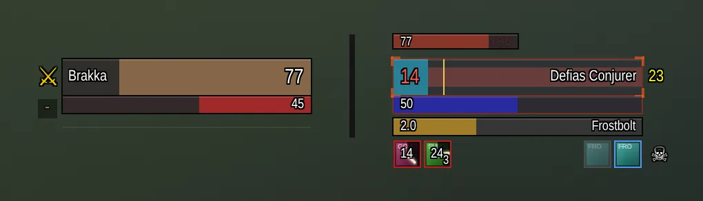
Casts and interrupts
The target's cast has its own lane under its bars, kept while you fight a hostile target so its debuffs never jump. It glows blue only when the cast can be interrupted and you have an interrupt ready.
The spine: threat and mobs on you
The threat flame climbs the dark track between the two groups and heats up with your share of threat on the target, with the number beside it when there's room. It flashes red for two seconds when you pull aggro.
Under it, a number counts the mobs on you or your pet once there are two or more: anything
that hit you in the last few seconds, and anything with you on its threat list (feared mobs, mobs on your Voidwalker,
mobs still running in). It flashes above two. Mobs heading your way that haven't hit yet show as
+2 INCOMING on your alerts row.
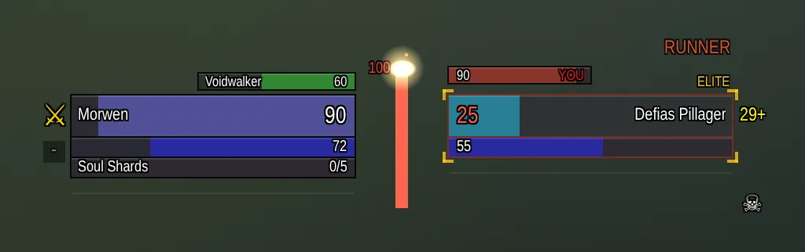
The icon rows
Under your bars, one row holds everything on you. Debuffs come in from the right, newest at the edge, with a red edge. From the left come your buffs: short buffs (procs, Slice and Dice, trinkets) with a green edge, then your crowd control on mobs (purple) and your totems (teal).
A dark sweep with a bright hand goes around each timed icon over its whole duration, darkening the time already gone. New icons shrink into place as they fade in, and ones that end break apart. Hover any icon for its tooltip.
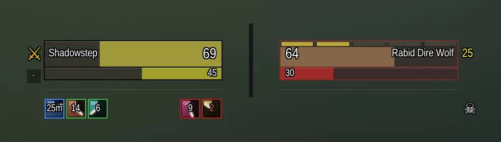
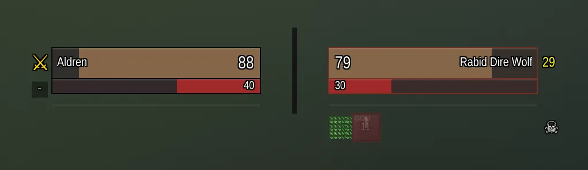
Long buffs
Your long buffs take one slot at the left, with a blue edge: the one running out soonest, and +N for how
many more. Hover it to see them all. A paladin's aura or a hunter's aspect always takes this slot.
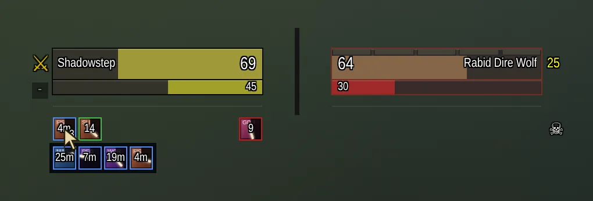
Crowd control and totems
Your Sap, Polymorph, Fear and other crowd control count down on your row, as do a shaman's totems. One that breaks or ends early flashes red for three seconds.
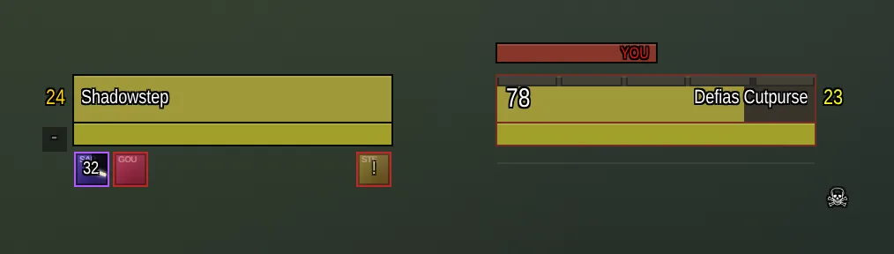
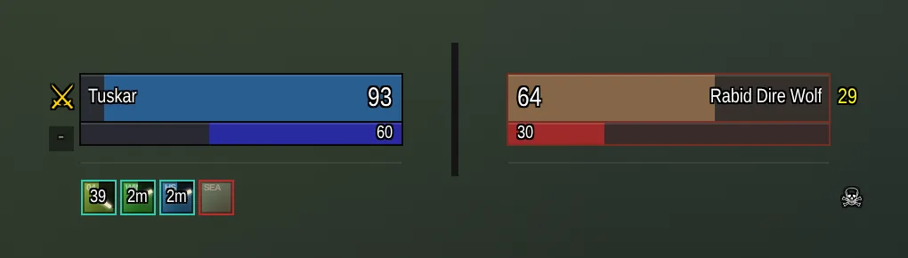
Your debuffs on the target, and known mob casts
Under the target, your debuffs on it come in from the left with a red edge, and pulse when about to run out. On the right, dimmed, are the casts this kind of mob has used before: blue-edged if they can be interrupted, gray if not. The one it's casting lights up, so you know what's coming before the cast bar says it.
Warnings
Glance only warns about things you can act on. Most sit on your icon row, the rest on the alerts row below it.
- Potion: a healing potion or healthstone you have ready, when you're low.
- Missing buffs: buffs you usually keep up that dropped. Right-click one to dismiss it.
- Incoming:
+N INCOMINGfor mobs heading your way. - Hunters: ammo running out, pet unhappy, and the dead zone where you're too close to shoot and too far to melee.
- Worn gear: an anvil when gear is worn or broken.
- Full bags: an orange-edged bag.
- Loot: a gold-edged bag while kills of yours still have loot.
- Breath: a blue-edged icon counting your air underwater, flashing faster as it runs out and red while drowning.
- Spotted: an eye when a mob notices you in stealth.
Right-click the loot, gear, bag or skull icon to hide it.
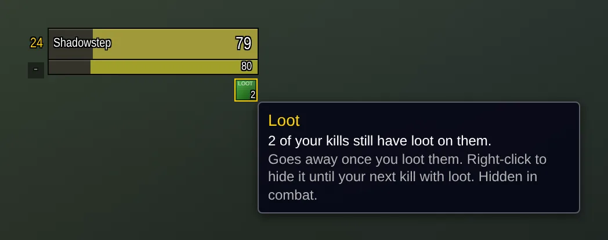
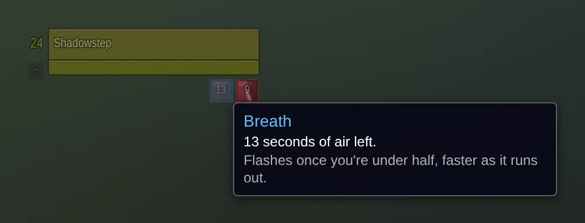
Death recap
After you die, a skull on your row shows how. Hover it for the last ten seconds of damage you took.
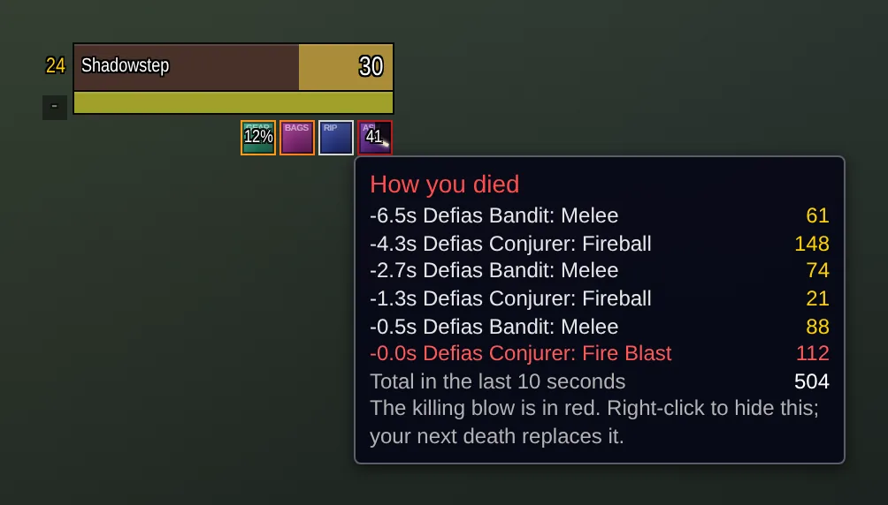
Runners
RUNNER flashes over the target's bars when a mob is about to flee. Humanoids run near 20% health, and
Glance remembers any other kind of mob it has seen run.
Enemy combo points on you
Gold segments along the top of your health, filling from the middle outward, are the combo points an enemy rogue or cat druid has built on you. You know how big the finisher will be before it lands.
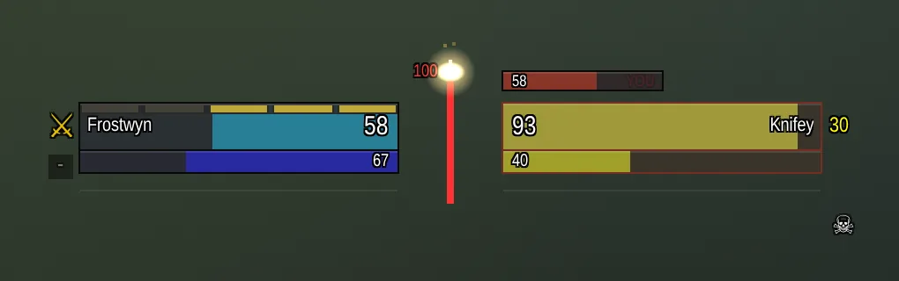
Tanks and healers
When a groupmate gets close to pulling aggro off you, a taunt icon flashes. While the last player you healed is under half health, their heal icon flashes too.
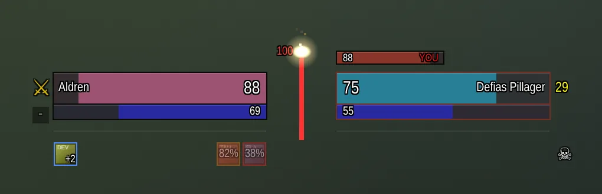
Quest progress
Under the target: the kills and items it counts for, with how often its kind drops the items you need. The game doesn't share drop tables, so Glance learns them from your own kills and loot, shared across your characters. Until a first drop, it guesses from names ("Boar Meat" from a "Crag Boar"). Hover a row for its quest.
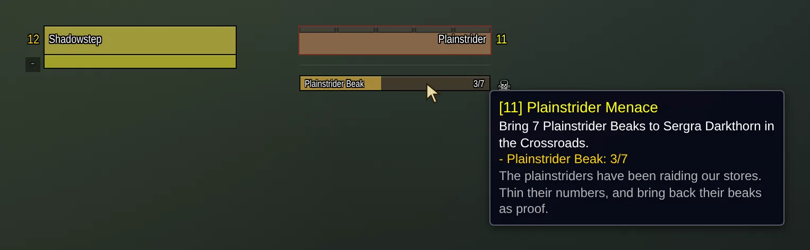
Raid marks
A skull sits at the outer end of the target's icon row. Click it to mark the target; hover it for all eight marks. It shows the target's mark when it has another. Ctrl-click the target's bars for skull and Alt-click for cross, or bind keys for them under Glance in the game's key bindings. Marking with the mark it already has clears it. The mark on you shows beside your level.
Clicking and targeting
Left and right drags that start on the bars still turn the camera, so the bars never get in the way in the middle of your screen. To click them, hold Shift, Ctrl or Alt. A plain right-click still opens the unit menu. Your own bars take a plain click while they rest faded. All of this works in combat.
Fading and resting
Your bars dim while you're idle: full health and power, nothing targeted, out of combat. The target's dim while it's out of range, with its level kept solid. In an inn or a city, a Zzz above your level means you're earning rested experience.
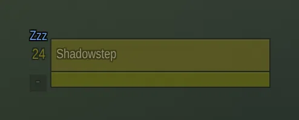
Minimal mode
Slim bars with no backgrounds and almost no text; only the target's name stays. Switch with the small button under
your level or /glance minimal. In combat the bars slim down at once; their click areas catch up when
combat ends.
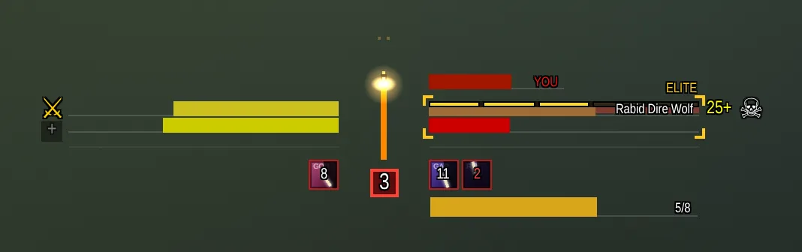
Help mode
Help mode is on for a fresh install. Hover any part of the bars to see what it shows, in the words on this page.
Click the ? under your level to turn it off; /glance help brings it back.
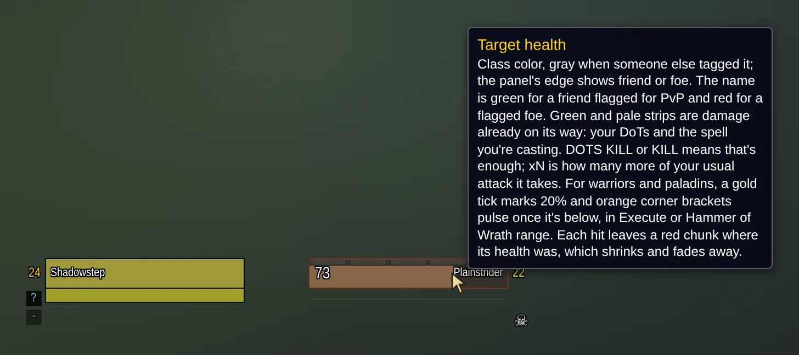
Moving and settings
Open Blizzard's Edit Mode, or type /glance unlock. Each group shows a blue box: drag it to move the
group, click it for its settings. You don't have to: on first run, and after /glance reset, the bars
start just below the middle of the screen.
Each group has its own settings: width, health and power height, text size, scale and opacity, and a checkbox for every part on this page.
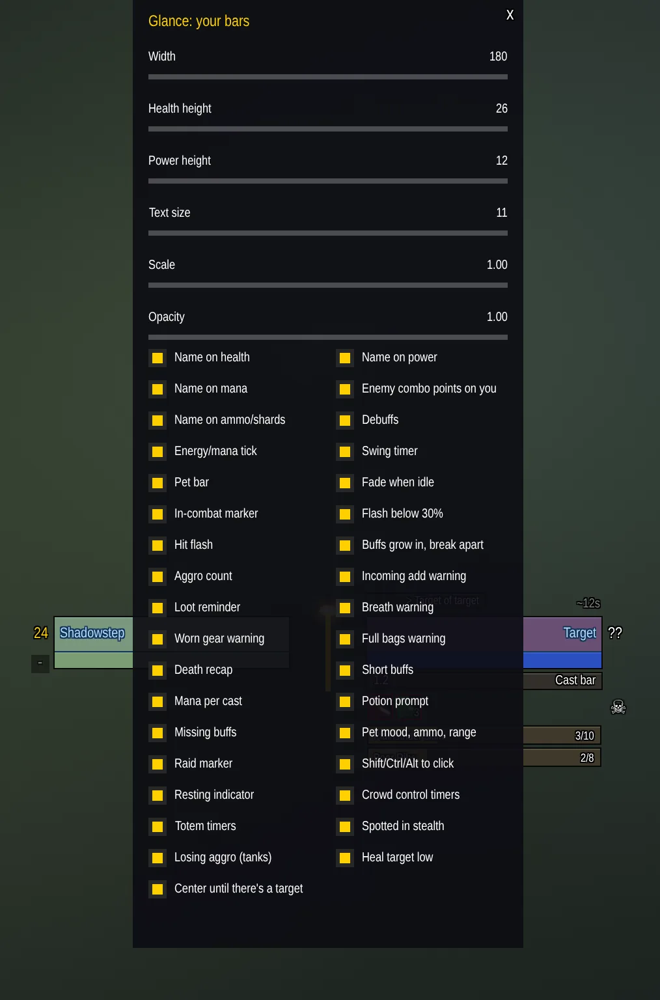
Commands
| Command | What it does |
|---|---|
/glance unlock, /glance lock | Show the blue boxes: drag to move, click for settings. Edit Mode does the same. |
/glance minimal | Slim bars with almost no text. |
/glance colors | Switch between deep and bright bar colors. |
/glance blizzard | Hide or show Blizzard's own player and target frames. |
/glance reset | Sizes and positions back to the defaults. |
/glance help | Help mode: hover anything to learn what it shows. |
/glance cpu [seconds] | Time what Glance costs while you play (30 seconds by default). |
/glance debug | Live CPU and memory bars under yours. |
Performance
Glance is built to cost as little as possible in a fight, and it lets you check. /glance debug shows live
bars under yours: CPU for each part, memory and how fast it grows, combat log lines, and the mob count. Each bar is
scaled to the highest value of the last 30 seconds, so a spike fills it. /glance cpu times a stretch of
play and prints where the time went.
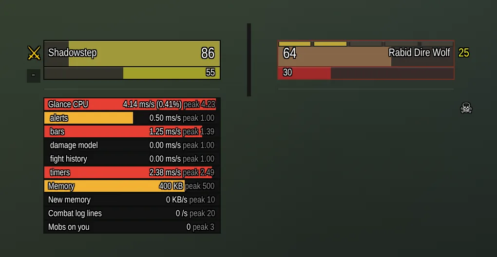
What Glance learns
Some parts get better the more you play, because the game doesn't tell addons these things directly. All of it stays in your own saved variables.
- Drop rates for quest items, from every kill and corpse you loot. Shared by your characters.
- Mob casts, from what each kind of mob has cast near you.
- Runners, from every mob seen fleeing.
- Kill pace, from how long fights with each kind of mob take this character.
- Your usual buffs, from which long buffs are up when your fights start.
To forget what it learned about one mob, use the mob menu.